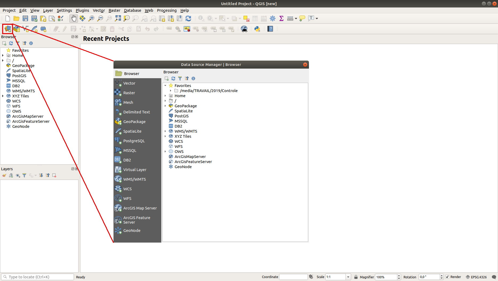
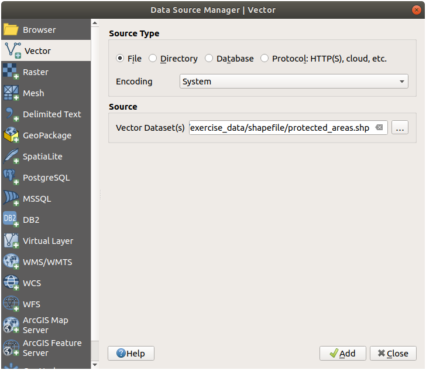

2.2. သင်ခန်းစာ- ပထမဆုံး layer များအား ထည့်သွင်းခြင်း (Lesson: Adding your first layers)
Application ကို စဖွင့်ပြီး နမူနာများနှင့် လေ့ကျင့်ခန်းများအတွက် အသုံးပြုရန် အခြေခံမြေပုံတစ်ခုကို ဖန်တီးမည်ဖြစ်ပါသည်။
ဤသင်ခန်းစာ၏ ရည်မှန်းချက်- နမူနာမြေပုံတစ်ခုနှင့် စတင်အသုံးပြုရန်
Note
ဤလေ့ကျင့်ခန်းကို မစတင်မီတွင် QGIS ကို သင့်ကွန်ပျူတာတွင် ထည့်သွင်းရထားမည်ဖြစ်ပြီး အသုံးပြုမည့် sample data ကိုလည်း download ပြုလုပ်ထားသင့်ပါသည်။
QGIS ထည့်သွင်းမှုတွင် မည်သို့သတ်မှတ်ထားသည်ပေါ်မူတည်၍ desktop shortcut ၊ menu item ၊ စသည်တို့မှ QGIS ကိုဖွင့်ပါ။
Note
ဤသင်တန်းအတွက် screenshot များကို Linux ပေါ်တွင် လုပ်ဆောင်နေသော QGIS 3.4 မှ ယူထားခြင်းဖြစ်ပါသည်။ သင့် setup ပေါ်မူတည်၍ မြင်တွေ့ရသော မျက်နှာပြင်သည် အနည်းငယ်ကွဲပြားမှုရှိနိုင်ပါသည်။ သို့သော် ပါဝင်သော ခလုတ်များအားလုံးအသုံးပြုနိုင်ပြီး ညွှန်ကြားချက်များသည် မည်သည့် OS ပေါ်တွင်မဆို အလုပ်လုပ်ပါလိမ့်မည်။ ဤသင်တန်းအတွက် QGIS 3.4 (သင်တန်းပြုစုချိန်၌ နောက်ဆုံးဗားရှင်း) လိုအပ်ပါလိမ့်မည်။
စတင်လိုက်ကြရအောင်!
2.2.1. ★☆☆ လိုက်လုပ်ကြည့်ပါ- မြေပုံတစ်ခု ပြင်ဆင်ခြင်း (Follow Along: Prepare a map)
QGIS ကိုဖွင့်ပါ။ မြေပုံအလွတ် အသစ်တစ်ခုပေါ်လာပါလိမ့်မည်။

Data Source Manager dialog တွင် data အမျိုးအစားပေါ်မူတည်၍ ထည့်သွင်းအသုံးပြုမည့် data ကို ရွေးချယ်နိုင်ပါသည်။ ကျွန်ုပ်တို့၏ dataset ကို ထည့်သွင်းရန် ၎င်းကို အသုံးပြုပါမည်-
 Open Data Source Manager ခလုတ်ကို click နှိပ်ပါ။
Open Data Source Manager ခလုတ်ကို click နှိပ်ပါ။Icon ကိုရှာမတွေ့ပါက menu ထဲတွင် Data Source Manager toolbar ကို ဖွင့်ထား/မထား စစ်ဆေးကြည့်ပါ။
 protected_areas.shpvector dataset ကိုထည့်သွင်းပါ-Vector tab ကို click နှိပ်ပါ။
 File ရင်းမြစ်အမျိုးအစားကို ဖွင့်ပေးပါ။
File ရင်းမြစ်အမျိုးအစားကို ဖွင့်ပေးပါ။Vector Dataset(s) ဘေးနားရှိ … ခလုတ်ကိုနှိပ်ပါ။
သင်တန်းအတွက်ဖိုင်များထားရှိရာလမ်းကြောင်းထဲမှ
exercise_data/shapefile/protected_areas.shpဖိုင်ကို ရွေးချယ်ပါ။Open ကိုနှိပ်ပါ။ ဖိုင်လမ်းကြောင်းဖြည့်ထားပြီးသော မူလ dialog ကို မြင်တွေ့ရမည်ဖြစ်သည်။
 Add ကို နှိပ်ပါ။ သင်ရွေးချယ်လိုက်သော data ကို ထည့်သွင်းသွားမည်ဖြစ်ပြီး Layers panel (ဘယ်ဘက်အောက်ခြေ) ထဲတွင်
protected_areasဆိုသော item တစ်ခုကို မြင်တွေ့ရပါမည်။ အဓိက မြေပုံမြင်ကွင်းထဲတွင် ၎င်း၏ feature များကို ပြသနေမည်ဖြစ်သည်။
{kind=link}
ဂုဏ်ယူပါတယ်! ယခုဆိုလျှင် သင့်တွင် အခြေခံမြေပုံတစ်ခုရှိသွားပြီ ဖြစ်သည်။ ထိုမြေပုံကို သိမ်းဆည်းကြည့်ပါမည်။
Save As ခလုတ်ကိုနှိပ်ပါ-

မြေပုံကို
exercise_dataနောက်solutionfolder တစ်ခုအောက်တွင် သိမ်းဆည်းပြီးbasic_map.qgzဟုအမည်ပေးပါ။
2.2.2. ★☆☆ မိမိကိုယ်တိုင်ကြိုးစားကြည့်ပါ- (Try Yourself:)
တူညီသော folder (exercise_data/shapefile) ထဲမှ places.shp နှင့် rivers.shp layer များကို မြေပုံထဲသို့ ထည့်သွင်းရန် အထက်ဖော်ပြပါအဆင့်များအတိုင်း ပြန်လည်လုပ်ဆောင်ပါ။
အဖြေ
Dialog ထဲတွင် အရောင်အမျိုးမျိုးဖြင့် ပုံသဏ္ဍာန် (shape) များစွာကို တွေ့ရမည်ဖြစ်သည်။ ပုံသဏ္ဍာန်တစ်ခုချင်းစီသည် layer တစ်ခုစီနှင့် သက်ဆိုင်ပြီး ၎င်းတို့၏အရောင်ကို ဘယ်ဘက် panel ထဲတွင် သတ်မှတ်ပေးနိုင်ပါသည် (သင်ကိုယ်တိုင်လုပ်ဆောင်သည့် အရောင်သည် အောက်ရှိ Fig. 2.1 ထဲရှိ အရာများနှင့်ကွဲပြားမှု ရှိနိုင်ပါသည်)-
Fig. 2.1 အခြေခံမြေပုံတစ်ခု
2.2.3. ★☆☆ လိုက်လုပ်ကြည့်ပါ- GeoPackage Database တစ်ခုမှ vector data ကိုထည့်သွင်းခြင်း (Follow Along: Loading vector data from a GeoPackage Database)
Database များသည် ဆက်စပ် data အများအပြားကို ဖိုင်တစ်ခုထဲတွင် သိမ်းဆည်းထားနိုင်ပါသည်။ သင့်အနေဖြင့် Libreoffice Base သို့မဟုတ် MS Access ကဲ့သို့သော database management system (DBMS) တစ်ခုနှင့် ရင်းနှီးကောင်းရင်းနှီးနိုင်ပါသည်။ GIS application များသည်လည်း database များကိုအသုံးပြုကြပါသည်။ GIS-specific DBMSes (PostGIS ကဲ့သို့) သည် spatial (တည်နေရာဆိုင်ရာ) data များကို ကိုင်တွယ်ရသောကြောင့် ၎င်းတို့တွင် လုပ်ဆောင်ချက်များပိုမိုပါဝင်ပါသည်။
GeoPackage open format သည် GIS data (layer များ) များကို ဖိုင်တစ်ခုတည်းအတွင်းတွင် သိမ်းဆည်းပေးနိုင်ပါသည်။ ESRI Shapefile format (ဥပမာ- အစောပိုင်းကထည့်သွင်းခဲ့သော protected_areas.shp dataset) နှင့်မတူသည်မှာ GeoPackage ဖိုင်တစ်ခုတွင် အမျိုးမျိုးသော data များ (vector နှင့် raster data နှစ်မျိုးလုံး) သည် မတူညီသော ရည်ညွှန်းကိုဩဒိနိတ်စနစ်များဖြင့် ပါဝင်နိုင်ပြီး တည်နေရာဆိုင်ရာ အချက်အလက်များမပါဝင်သော ဇယားများလည်း ပါဝင်နိုင်ပါသည်။ ထို feature များအားလုံးသည် data များအလွယ်တကူ မျှဝေပေးစေနိုင်ပြီး ဖိုင်များထပ်နေခြင်းမှလည်းရှောင်ရှားစေနိုင်ပါသည်။
GeoPackage တစ်ခုမှ layer တစ်ခုကို ထည့်သွင်းရန်၊ ဦးစွာ ၎င်း GeoPackage နှင့်ချိတ်ဆက်ရမည်ဖြစ်သည်-
- Open Data Source Manager ခလုတ်ကို နှိပ်ပါ။
 GeoPackage tab တွင် ဘယ်ဘက် click နှိပ်ပါ။
GeoPackage tab တွင် ဘယ်ဘက် click နှိပ်ပါ။New ခလုတ်ကိုနှိပ်ပြီး သင် download ပြုလုပ်ထားသော
exercise_datafolder ထဲရှိtraining_data.gpkgဖိုင် ဆီသို့ဖွင့်လိုက်ပါ။ဖိုင်ကို ရွေးချယ်ပြီး Open ကိုနှိပ်ပါ။ ဖိုင်လမ်းကြောင်းကို GeoPackage ချိတ်ဆက်မှုစာရင်းထဲတွင် ထည့်သွင်းသွားမည်ဖြစ်ပြီး drop-down menu ထဲတွင် ပေါ်လာမည်ဖြစ်သည်။
ယခုဆိုလျှင် ဤ GeoPackage မှ မည်သည့် layer ကိုမဆို QGIS ထဲသို့ ထည့်သွင်းနိုင်ပြီ ဖြစ်ပါသည်။
Connect ခလုတ်ကို နှိပ်ပါ။ Window ၏အလယ်ပိုင်းတွင် GeoPackage ဖိုင်ထဲတွင် ပါဝင်သော layer များအားလုံးစာရင်းကို မြင်တွေ့ရမည်ဖြစ်သည်။
roads layer ကိုရွေးချယ်ပြီး Add ခလုတ်ကိုနှိပ်ပါ။

roads layer သည် Layers panel ထဲသို့ ရောက်ရှိသွားပြီး မြေပုံမြင်ကွင်းတွင် feature များကို မြင်တွေ့ရမည်ဖြစ်သည်။
Close ကိုနှိပ်ပါ။
ဂုဏ်ယူပါတယ်! သင့်အနေဖြင့် GeoPackage တစ်ခုမှ ပထမဦးဆုံး layer ကို ထည့်သွင်းပြီးပြီ ဖြစ်ပါသည်။
2.2.4. ★☆☆ လိုက်လုပ်ကြည့်ပါ- SpatiaLite Database တစ်ခုမှ Browser အသုံးပြု၍ vector data ကို ထည့်သွင်းခြင်း (Follow Along: Loading vector data from a SpatiaLite Database with the Browser)
QGIS တွင် အခြား database format များစွာ အသုံးပြုနိုင်ပါသည်။ GeoPackage ကဲ့သို့ပင် SpatiaLite database format သည် SQLite library ၏ extension တစ်ခုဖြစ်ပြီး SpatiaLite တစ်ခုမှ layer တစ်ခုကို ထည့်သွင်းခြင်းသည် အထက်ပင်ဖော်ပြခဲ့သော စည်းမျဉ်းများအတိုင်းဖြစ်ပါသည်- ချိတ်ဆက်မှုဖန်တီး –> အသုံးပြုနိုင်အောင် ဖွင့်ပေး –> layer (များ) ကို ထည့်သွင်း။
ထိုနည်းလမ်းသည် SpatiaLite data ကို မြေပုံထဲသို့ ထည့်သွင်းသည့်နည်းလမ်းတစ်ခုဖြစ်ပြီး data ထည့်သွင်းရန် အသုံးဝင်သောနောက်ထပ်နည်းလမ်းဖြစ်သော Browser အသုံးပြုပုံကို ကြည့်ကြည့်ရအောင်-
Data Source Manager window ကို ဖွင့်ရန်
icon ကိုနှိပ်ပါ။ Browser tab ပေါ်တွင် နှိပ်ပါ။
Browser tab ပေါ်တွင် နှိပ်ပါ။ဤ tab ထဲတွင် သင့်ကွန်ပျူတာနှင့်ချိတ်ဆက်ထားသော storage disk များအားလုံးကို မြင်တွေ့နိုင်ပြီး ဘယ်ဘက်ရှိ tab အများစုအတွက် ထည့်သွင်းစရာများ (entry) ကိုလည်း တွေ့မြင်နိုင်ပါသည်။ ၎င်းသည် ချိတ်ဆက်ထားသော database များ သို့မဟုတ် folder များကို လျင်မြန်စွာအသုံးပြုစေနိုင်ပါသည်။
ဥပမာအားဖြင့်၊
 GeoPackage ဘေးရှိ drop-down icon ကိုနှိပ်လိုက်ပါ။ ယခင်က ချိတ်ဆက်ထားသော
GeoPackage ဘေးရှိ drop-down icon ကိုနှိပ်လိုက်ပါ။ ယခင်က ချိတ်ဆက်ထားသော training-data.gpkgဖိုင် (နှင့် ဖြန့်ကြည့်ထားမည်ဆိုလျှင် ၎င်းထဲရှိ layer များ) ကို မြင်တွေ့ရပါလိမ့်မည်။ SpatiaLite ကို right-click နှိပ်ပြီး New Connection… ကို ရွေးချယ်ပါ။
SpatiaLite ကို right-click နှိပ်ပြီး New Connection… ကို ရွေးချယ်ပါ။exercise_datafolder ဆီသို့ ညွှန်ပေးပြီးlanduse.sqliteဖိုင်ကိုရွေးချယ်ကာ Open ကိုနှိပ်ပါ။ landuse.sqlite တစ်ခုသည် SpatiaLite ဆိုသည့်အောက်တွင် ထည့်သွင်းပြီးသားဖြစ်နေသည်ကို သတိထားကြည့်ပါ။
landuse.sqlite တစ်ခုသည် SpatiaLite ဆိုသည့်အောက်တွင် ထည့်သွင်းပြီးသားဖြစ်နေသည်ကို သတိထားကြည့်ပါ။- landuse.sqlite ကို အကျယ်ဖွင့်ကြည့်ပါ။
 landuse layer ကို click နှစ်ချက်နှိပ်ပါ သို့မဟုတ် ၎င်းကိုရွေးချယ်ပြီး မြေပုံမြင်ကွင်းထဲသို့ drag-and-drop (ဖိဆွဲပြီးလွှတ်) ပြုလုပ်ပါ။ Layers panel ထဲသို့ layer အသစ်တစ်ခု ထည့်သွင်းသွားမည်ဖြစ်ပြီး ၎င်း၏ feature များကို မြေပုံမြင်ကွင်းပေါ်တွင် မြင်တွေ့ရမည်ဖြစ်သည်။
landuse layer ကို click နှစ်ချက်နှိပ်ပါ သို့မဟုတ် ၎င်းကိုရွေးချယ်ပြီး မြေပုံမြင်ကွင်းထဲသို့ drag-and-drop (ဖိဆွဲပြီးလွှတ်) ပြုလုပ်ပါ။ Layers panel ထဲသို့ layer အသစ်တစ်ခု ထည့်သွင်းသွားမည်ဖြစ်ပြီး ၎င်း၏ feature များကို မြေပုံမြင်ကွင်းပေါ်တွင် မြင်တွေ့ရမည်ဖြစ်သည်။
Tip
ထဲတွင် Browser panel ကို ဖွင့်ပေးပြီး data များထည့်သွင်းရန် အသုံးပြုပါ။ ၎င်းသည် tab အတွက် လွယ်ကူသော ဖြတ်လမ်းနည်းတစ်ခုဖြစ်ပြီး လုပ်ဆောင်ချက်များအတူတူပင်ဖြစ်သည်။
Note
သင့် project ကို မကြာခဏ သိမ်းဆည်းပေးရန် မမေ့ပါနှင့်။ Project ဖိုင်ကိုယ်တိုင်ထဲတွင် မည်သည့် data မှပါဝင်မည်မဟုတ်သော်လည်း မြေပုံထဲသို့ မည်သည့် layer များထည့်သွင်းထားသည်ကို မှတ်ထားပေးပါသည်။
2.2.5. ★★☆ မိမိကိုယ်တိုင်ကြိုးစားကြည့်ပါ- ပိုများသော Vector Data များထည့်သွင်းခြင်း (Try Yourself: Load More Vector Data)
exercise_data folder ထဲမှ အောက်ဖော်ပြပါ dataset များကို အထက်တွင်ရှင်းပြထားသော နည်းလမ်းများထဲမှတစ်ခုခုကိုအသုံးပြု၍ မြေပုံထဲသို့ ထည့်သွင်းပါ-
buildings
water
အဖြေ
သင့်မြေပုံတွင် layer ၇ ခုရှိသင့်ပါသည်-
protected_areas
places
rivers
roads
landuse
buildings (
training_data.gpkgမှယူထားသည်) နှင့်water (
exercise_data/shapefileမှယူထားသည်)
2.2.6. လိုက်လုပ်ကြည့်ပါ- Layer များကို အပေါ်အောက် အစဉ် ပြန်စီခြင်း (Follow Along: Reordering the Layers)
Layer စာရင်းထဲရှိ layer များကို မြေပုံပေါ်တွင် အစဉ် (order) တစ်ခုဖြင့်ရေးဆွဲထားပါသည်။ စာရင်းအောက်ဆုံးရှိ layer ကို ပထမဦးဆုံး ရေးဆွဲမည်ဖြစ်ပြီး ထိပ်ဆုံးရှိ layer ကို နောက်ဆုံးမှ ရေးဆွဲမည်ဖြစ်သည်။ စာရင်းထဲရှိ layer အစဉ် (order) ကို ပြောင်းလဲခြင်းအားဖြင့် ရေးဆွဲသည့် အစဉ် (order) ကို ပြောင်းလဲနိုင်ပါသည်။
Note
ဤလုပ်ဆောင်မှုကို Layer Order panel အောက်ရှိ Control rendering order checkbox ကိုအသုံးပြု၍ ပြောင်းလဲပေးနိုင်ပါသည်။ သို့သော် ထို feature အကြောင်းကို ယခုဆွေးနွေးသွားလိမ့်မည်မဟုတ်ပါ။
မြေပုံထဲသို့ ထည့်သွင်းပြီးသော layer များ၏ အစဉ် (order) သည် ဤအဆင့်တွင် ယုတ္တိမရှိနိုင်ပါ။ လမ်း (road) layer သည် ၎င်းအပေါ်တွင် အခြား layer များရှိနေခြင်းကြောင့် အပြည့်အဝ ကွယ်နေခြင်းမျိုး ဖြစ်နိုင်ပါသည်။
ဥပမာအားဖြင့် ဤ layer order သည် roads နှင့် places များသည် ပျောက်ကွယ်နေမည်ဖြစ်သည်၊ အကြောင်းမှာ ၎င်းတို့သည် landuse layer ၏ အောက်တွင်ရောက်ရှိနေသောကြောင့်ဖြစ်သည်။

ထိုပြဿနာကို ဖြေရှင်းရန်-
Layer များစာရင်းထဲရှိ layer တစ်ခုပေါ်တွင် click နှိပ်၍ ဖိဆွဲပါ။
အောက်ပါပုံအတိုင်း အစဉ် (order) ကို ပြန်စီပါ-

ယခုဆိုလျှင် roads နှင့် buildings များသည် landuse နယ်မြေများအပေါ်တွင် ပေါ်လာပြီး မြေပုံသည် အမြင်ပိုင်းအရ ပိုမို အဓိပ္ပါယ်ရှိလာပြီဖြစ်သည်။
2.2.7. နိဂုံးချုပ် (In Conclusion)
ယခုဆိုလျှင် သင့်အနေဖြင့် မတူညီသော ရင်းမြစ် များစွာမှ လိုအပ်သော layer များအားလုံးကို ထည့်သွင်းပြီး အခြေခံမြေပုံတစ်ခုကို ဖန်တီးခဲ့ပြီး ဖြစ်ပါသည်။
2.2.8. နောက်ထပ် ဘာအကြောင်းအရာလဲ? (What’s Next?)
ယခုဆိုလျှင် သင့်အနေဖြင့် Open Data Source Manager ခလုတ်၏ အခြေခံအလုပ်လုပ်ပုံများနှင့် ရင်းနှီးသွားပြီဖြစ်ပါသည်။ သို့သော် အခြားအရာတွေအတွက်ရော ဘယ်လိုအရာတွေဖြစ်မလဲ။ Interface က မည်သို့အလုပ်လုပ်တာလဲ။ ထိုအကြောင်းအရာများသို့ ဆက်မသွားခင် QGIS interface နှင့် အပြန်အလှန်လုပ်ဆောင်မှု အခြေခံအချို့ကို ကြည့်ကြည့်ရအောင်။ ဤအရာသည် နောက်သင်ခန်းစာ၏ ခေါင်းစဉ်ဖြစ်ပါသည်။